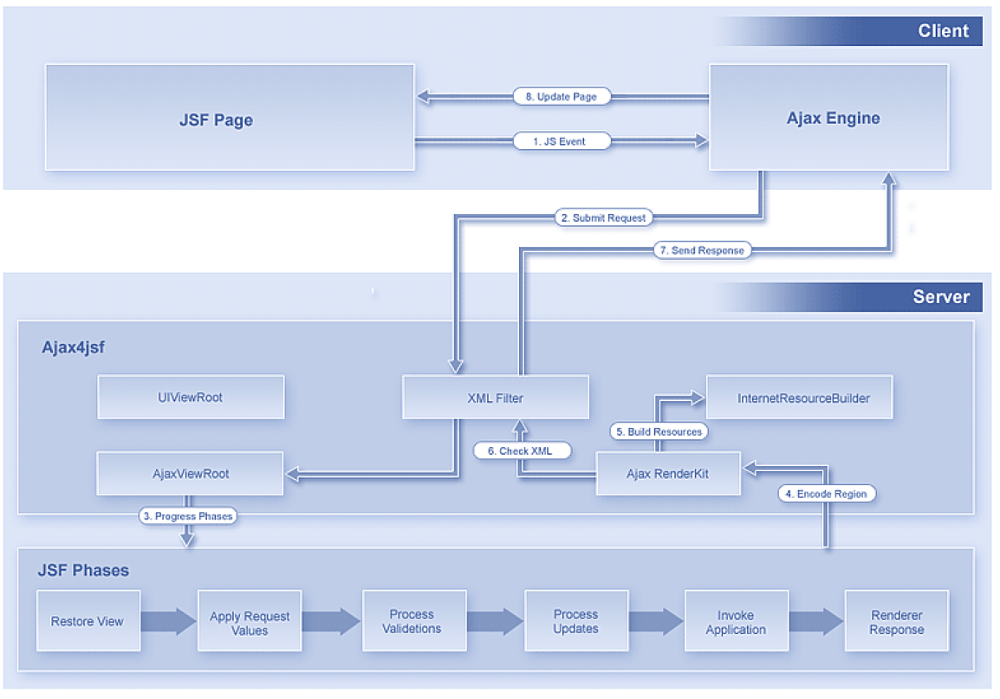
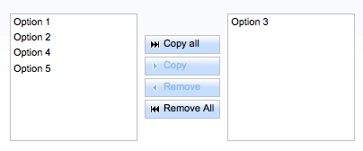
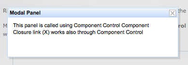
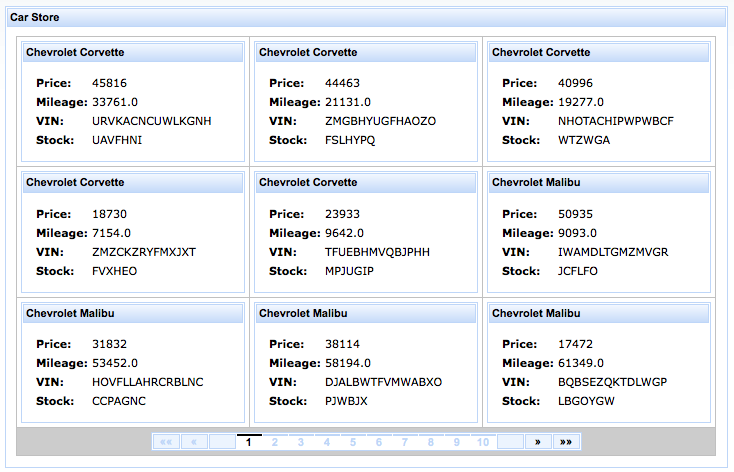
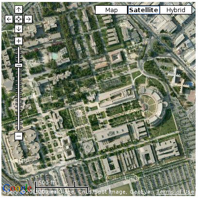
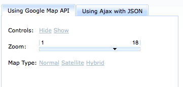

Internacionalización. Menajes Flash. RichFaces: una librería de componentes profesional
Mensajes e internacionalización
Cuando creamos una aplicación web, es una buena idea colocar todos los mensajes en una mima localización central. Este proceso hace que sea más facil, entre otras cosas, internacionalizar la aplicación a otros idiomas.
Estos mensajes se guardarán en un fichero properties, guardando las cadenas de una forma ya conocida por todos a estas alturas del curso:
login_nombre=Nombre de usuario: login_password=Contraseña:
Este fichero se puede guardar donde sea, pero es muy importante que tenga la extensión .properties (ej: src/es/ua/jtech/i18n/messages.properties)
Para indicar el fichero de recursos que vamos a emplear, podemos hacerlo de dos maneras. La más fácil es indicarlo en el fichero faces-config.xml, dentro del directorio WEB-INF, de la siguiente manera:
<?xml version="1.0"?>
<faces-config xmlns="http://java.sun.com/xml/ns/javaee"
xmlns:xsi="http://www.w3.org/2001/XMLSchema-instance"
xsi:schemaLocation="http://java.sun.com/xml/ns/javaee
http://java.sun.com/xml/ns/javaee/web-facesconfig_2_0.xsd" version="2.0">
<application>
<resource-bundle>
<base-name>es.ua.jtech.i18n.messages</base-name>
<var>msgs</var>
</resource-bundle>
</application>
</faces-config>
En lugar de usar una declaración global del fichero de recursos, podemos añadir el elemento f:loadBundle a cada página JSF que necesite acceso a los recursos. Ejemplo:
<f:loadBundle basename="es.ua.jtech.messages" var="msgs"/>
En cualquiera de los casos, los mensajes son accesibles a través de un mapa, con el nombre msgs.
A partir de este momento, podremos usar expresiones como #{msgs.login_nombre} para acceder a las cadenas de los mensajes.
Mensajes con partes variables
Muchas veces, los mensajes tienen partes variables que no se pueden rellenar a la hora de declarrar el fichero de recursos. Imaginemos por ejemplo un marcador de puntuación con la frase Tienes n puntos, donde n es un valor devuelto por un bean. En este caso, en nuestro fichero de recursos haremos un String con un placeholder:
tuPuntuacion=Tienes {0} puntos.
Los placeholders se numeran partiendo del cero. En nuestra página JSF, usaremos el tag h:outputFormat, introduciendo como hijos tantos f:param como placeholders haya:
<h:outputFormat value="#{msgs.tuPuntuacion}">
<f:param value="#{marcadorBean.puntos}"/>
</h:outputFormat>
El tag h:outputFormat usa la clase MessageFormat de la librería estándar para formatear el mensaje.
Añadiendo un segundo idioma
Cuando localizamos un fichero de recursos, debemos añadir un sufijo de locales al nombre del fichero: un guión bajo seguido del código de dos letras ISO-639 en minúsculas. Por ejemplo, las cadenas en inglés estarían en el fichero messages_en.properties y las cadenas en alemán en el fichero messages_de.properties.
Como parte del soporte de internacionalización en Java, el fichero de recursos que coincida con el locale actual se cargará automáticamente. El fichero por defecto sin sufijo de locale se usará como alternativa si no hay un locale específico para un idioma dado
Cambiando de idioma
Ahora que ya sabemos que podemos tener un fichero de recursos por idioma y cómo introducir variables en determinados mensajes, tenemos que decidir cómo establecer el locale de nuestra aplicación. Tenemos tres opciones:
- Podemos dejar al navegador que escoja el locale. Estableceremos el locale por defecto y los idiomas soportados en el fichero WEB-INF/faces-config.xml:
<faces-config> <application> <locale-config> <default-locale>en</default-locale> <supported-locale>de</supported-locale> </locale-config> </application> </faces-config>Cuando el navegador se conecta a nuestra aplicación, normalemente incluye un valor Accept-Language en las cabeceras HTTP. La implementación de JSF lee este header y averigua la que mejor casa de entre la lista de idiomas soportados. Esta característica se puede probar fácilmente si cambias el idioma predeterminado en tu navegador web. - También podemos establecer el idioma de manera programada. Esto se consigue llamando al
método setLocale del objetoUIViewRoot.
UIViewRoot viewRoot = FacesContext.getCurrentInstance().getViewRoot(); viewRoot.setLocale(new Locale("de")); - Por último, podemos establecer el idioma de una página determinada si usamos el elemento
f:view con un atributo locale. Por ejemplo:
<f:view locale="de">
Podemos convertirlo en algo dinámico si el atributo locale se vincula a una variable:<f:view locale="#{langController.lang}">Esta última opción es muy útil en aquellas aplicaciones en que dejamos al usuario elegir un idioma determinado.
Mensajes Flash
Desde JSF 2.0, se ha incluido un objeto flash, que puede declararse en una petición y ser usado en la siguiente. Este concepto se ha tomado prestado del framework Ruby on Rails. Un uso común que se le da al objeto flash es para el paso de mensajes. Por ejemplo: un controlador puede poner un mensaje en el flash:
ExternalContext.getFlash().put("message", "Campo actualizado correctamente");
El método ExternalContext.getFlash() devuelve un objeto de la clase Flash que implementa un Map<String, Object>
En nuestra página JSF, podemos referenciar el objeto flash mediante la variable flash. Por ejemplo, podemos mostrar el mensaje de la siguiente manera:
#{flash.message}
Una vez el mensaje se ha renderizado y la vista ha sido enviada al cliente, la cadena se elimina automáticamente del flash.
Si queremos mantener el valor del flash para más de una petición, podemos hacerlo invocándolo de la siguiente manera:
#{flash.keep.message}
De esta manera, el valor de mensaje se añadirá nuevamente al flash, pudiendo ser utilizado en la próxima petición.
Introducción a RichFaces
RichFaces surgió como un framework desarrollado por la compañía Exadel orientado a introducir Ajax en JSF. De hecho, su primer nombre fue Ajax2jsf y ahora algunas etiquetas tienen el prefijo a4j. Exadel lanzó el framework en marzo de 2006. A finales de año, el framework se dividió en 2 partes llamados Rich Faces, que define los componentes propiamente dichos, y Ajax4jsf, que define las etiquetas específicas que dan soporte a Ajax. La primera parte se hizo comercial y la segunda se convirtió en un proyecto opensource en Java.net.
En marzo de 2007, JBoss (ahora parte de Red Hat) y Exadel firmaron un acuerdo por el que ambos frameworks serían distribuidos y utilizados por JBoss y serían gratuitos y opensource. En septiembre de 2007, JBoss y Exadel decidieron unirlos en un único producto llamado RichFaces. Esta decisión ha facilitado el mantenimiento de ambos productos y el lanzamiento de nuevas versiones.
En la actualidad, RichFaces es una parte fundamental del framework Seam propuesto por JBoss. Este framework incluye un stack de tecnólogías Java EE formado por JSF, JPA, EJB 3.0 y BPM (Business Pocess Management) además de plug-ins para Eclipse para facilitar su desarrollo.
Entrando en algo de detalle sobre sus características técnicas, podemos decir que trabaja sobre JSF, ampliando su ciclo de vida y sus funcionalidades de conversión y de validación mediante la introducción de Ajax. Los componentes RichFaces llevan incluido soporte Ajax y un look-and-feel altamente customizable que puede ser fácilmente integrado en la aplicación JSF. Las características más importantes son:
- Integración de Ajax en el ciclo de vida JSF. Mientras que otros frameworks sólo utilizan las funcionalidades de JSF de acceso a los beans gestionados, RichFaces utiliza la gestión de eventos de JSF para integrar Ajax. En concreto, hace posible la invocación de validadores y conversores en el lado del cliente cuando se utiliza Ajax en los manejadores de eventos de acción y eventos de cambio de valor.
- Posibilidad de añadir capacidades de Ajax a las aplicaciones JSF existentes. El framework proporciona dos librerías de componentes: Core Ajax y UI. La librería de Core Ajax permite utilizar las funcionalidades de Ajax en las páginas existentes, de forma que no hay necesidad de escribir nada de código Javascript ni de reemplazar los componentes existentes con los nuevos componentes Ajax. RichFaces permite soporte de Ajax a nivel de página, en lugar del tradicional soporte a nivel de componente y ello hace posible definir los eventos en la página. Un evento invoca una petición Ajax al servidor, se ejecuta esta petición y se cambian ciertos valores del modelo y es posible indicar qué partes de la página (y del árbol de componentes) deben ser renderizados de nuevo.
- Posiblidad de crear vistas complejas creadas a partir de un amplio conjunto de componentes listos para ser utilizados. Se extiende el núcleo de componentes JSF con una amplia librería de componentes con capacidades Ajax que incluyen también soporte para definir skins. Además, los componentes JSF están diseñados para poder ser utilizados con componentes de terceros en la misma página.
- Soporte para la creación de componentes con Ajax incorporado. RichFaces pone a disposición de los desarrolladores el Component Development Kit (CDK) utilizado para la creación de los componentes de la librería. El CDK incluye una herramienta de generación de código y una utilidad de templates con una sintaxis similar a JSP.
- Los recursos se empaquetan junto con las clases Java de la aplicación. Además de sus funcionalidades básicas, las facilidades de Ajax de RichFaces proporcionan la posibilidad de gestionar tres tipos de recursos: imágenes, código Javascript y hojas de estilo CSS. El framework de recursos hace posible empaquetar estos recursos en ficheros Jar junto con el código de los componentes de la aplicación.
- Facilidades para generar recursos en caliente. El framework de recursos puede generar imágenes, sonidos, hojas de cálculo Excel, etc. en caliente, a partir de datos proporcionados por el usuario.
- Skins. RichFaces proporciona la posibilidad de configurar los componentes en base a skins que agrupan características visuales como fuentes o esquemas de color. Es posible también acceder a los parámetros del skin a partir del código Java y de la configuración de la página. RichFaces proporciona un conjunto de skins predefinidos, pero es posible ampliarlos con skins creados por nosotros.
Skins
Una de las funcionalidades de RichFaces son los skins. Es posible modificar el aspecto de todos los componentes cambiando una única constante del framework. En concreto, el skin a utilizar en la aplicación se define en el fichero web.xml con el parámetro org.richfaces.SKIN:
<context-param> <param-name>org.richfaces.SKIN</param-name> <param-value>wine</param-value> </context-param>
Los posibles valores de este parámetro son:
DEFAULT plain emeraldTown blueSky wine japanCherry ruby classic deepMarine
Los skins definen el color y los fuentes tipográficos de los componentes aplicando valores a constantes que se aplican con hojas de estilo a las páginas HTML resultantes. Estas constantes están bastante bien pensadas, y dan coherencia al aspecto de todos los componentes. Por ejemplo, la constante headerGradientColor define el color de gradiente de todas las cabeceras y generalTextColor define el color por defecto del texto de todos los componentes.
Para más información sobre las características de los skins, cómo utilizarlos y cómo definir nuevos, se puede consultar el apartado sobre skins de la guía de desarrollo (versión 3.0).
Peticiones Ajax y ciclo de vida
Una de las características fundamentales de RichFaces es la forma de tratar los eventos JavaScript y de incorporarlos en el ciclo de vida JSF.
Con el soporte Ajax de JSF es posible lanzar peticiones Ajax al ciclo de vida JSF desde cualquier componente, no sólo desde los componentes <command>. A diferencia de una petición JSF, una petición Ajax hace que el navegador redibuje todos los componentes de la página actual, sino sólo los que nos interesan.
La figura siguiente muestra el ciclo de proceso de una petición Ajax:

- La página o el componente genera un evento JavaScript que es capturado por el motor de Ajax y por el manejador que definimos en la página.
- Se envía la petición al servidor, con todos los atributos existentes en la página, como una petición JSF normal.
- En el servidor se lanzan todas las fases del ciclo de vida JSF (conversión, validación, actualización del modelo y lanzamiento de acciones y el redibujado de la respuesta), pero la respuesta no se devuelve al navegador, sino al motor de Ajax.
- El motor de Ajax actualiza sólo aquellas partes de la página del navegador que le hemos indicando, modificándolas con las partes obtenidas en la respuesta JSF.
Componentes Ajax
Existen bastantes componentes RichFaces con distintos comportamientos. Los más usados para enviar peticiones Ajax son <a4j:commandButton> y <a4j:commandLink>, que envían una petición cuando el usuario pulsa un botón (similares a los h:command) y <a4j:support> que se incluye en otro componente JSF y permite enviar una petición Ajax al servidor cuando sucede un determinado evento Javascript en el componente.
El siguiente código muestra un ejemplo de uso de a4j:commandButton:
<a4j:commandButton value="Enviar" action="#{bean.doAction}"/>
Vemos que es idéntico al componente h:commandButton. El atributo value define el texto que aparece en el botón. Y el atributo action apunta al método doAction del bean hace de controlador. La diferencia con el h:commandButton es la comentada anteriormente. En una petición estándar JSF la página resultante se devuelve al navegador y éste la vuelve a pintar por completo. En una petición Ajax, el servidor devuelve la página resultante al motor Ajax, y es éste el que decide lo que hay que pintar en la página.
En el apartado siguiente explicaremos cómo decidir qué partes de la página se deben pintar de nuevo con la petición Ajax.
Otro componente Ajax muy usado es <a4j:support>. Se puede definir dentro de cualquier componente JSF y permite capturar los eventos Javascript HTML soportados por ese componente y generar una petición Ajax. Por ejemplo:
<h:inputText value="#{user.name}">
<a4j:support event="onkeyup" action="#{bean.doAction}"/>
</h:inputText>
En este caso se captura el evento Javascript onkeyup del <h:inputText> y se envía la petición Ajax al servidor para ejecutar el método doAction del bean.
Los eventos soportados por <a4j:support> son los posibles eventos javascript del componente padre:
- onblur: evento generado cuando el elemento pierde el foco.
- onchange: evento generado cuando el elemento pierdo el foco y se ha modificado su valor.
- onclick: evento generado cuando se hace un click con el ratón sobre el elemento.
- ondblclick: evento generado cuando se hace un doble click con el ratón sobre el elemento.
- onfocus: evento generado cuando el elemento recibe el foco.
- onkeydown: evento generado cuando se pulsa una tecla sobre el elemento.
- onkeypress: evento generado cuando se pulsa y se suelta una tecla sobre el elemento.
- onkeyup: evento generado cuando se suelta una tecla sobre el elemento.
- onmousedown: evento generado cuando se pulsa el ratón sobre el elemento.
- onmousemove: evento generado cuando se mueve el ratón dentro del elemento.
- onmouseout: evento generado cuando se saca el ratón fuera del elemento.
- onmouseover: evento generado cuando se entra con el ratón dentro del elemento.
- onmouseup: evento generado cuando el botón del ratón se suelta dentro del elemento.
- onselect: evento generado cuando se selecciona texto dentro del elemento.
Además de los dos componentes vistos anteriormente, RichFaces proporciona otros componentes que generan eventos Ajax. En la guía de desarrollo de RichFaces se encuentra una explicación detallada de su uso.
- <a4j:ajaxListener>: se utiliza dentro de otro componente Ajax para declarar manejadores de eventos de JSF igual que <f:actionListener> o <f:valueChangeListener>.
- <a4j:keepAlive>: permite mantener el estado de los beans entre distintas peticiones.
- <a4j:actionparam>: combina la funcionalidad de <f:param> y <f:actionListener>.
- <a4j:form>: es muy similar al mismo componente de la librería HTML de JSF, proporcionando además las funcionalidades de generación de enlaces y la posibilidad de petición Ajax por defecto.
- <a4j:htmlCommandLink>: es muy similar al mismo componente JSF HTML, pero resuelve algunos de sus problemas cuando se usa con Ajax.
- <a4j:jsFunction>: permite obtener datos del en el servidor en forma de objetos JSON y lanzar una función Javascript con ellos.
- <a4j:include>: se usa para incluir código HTML en las páginas.
- <a4j:loadBundle>: se usa para cargar un conjunto de recursos.
- <a4j:log>: abre una ventana con la información del evento Javascript producido en el cliente.
- <a4j:mediaOutput>: permite generar imágenes, vídeo, sonidos y otros recursos en caliente (on-the-fly).
- <a4j:outputPanel>: similar al componente JSF HTML, pero incluyendo facilidades para su uso con Ajax como la posibilidad de insertar elementos no presentes en el árbol de componentes o la posibilidad de guardar el estado de elementos.
- <a4j:poll>: permite enviar eventos Ajax periódicos al servidor.
- <a4j:push>: permite enviar peticiones Ajax periódicas al servidor, para simular un comportamiento push.
- <a4j:region>: define el área que es redibujada después de la petición Ajax.
Redibujado de componentes
Por ejemplo, uno de los atributos más importantes es reRender, con el que se puede conseguir que JSF sólo renderice una parte de la página actual, la indicada por el valor del atributo. En el siguiente caso, se indica que sólo se debe volver a pintar el bloque marcado con el identificador miBloque, correspondiente a un h:panelGrid:
... <a4j:commandButton value="Actualizar" reRender="miBloque"/> ... <h:panelGrid id="miBloque"> ... </h:panelGrid> ...
Vemos que en el ejemplo no se define ningún evento de acción, sino que únicamente se envía la petición JSF para que se ejecute el ciclo de vida con la vista actual y se renderice únicamente el panelGrid identificado por miBloque. Si queremos actualizar más de un componente bastaría con denominarlo con el identificador miBloque, o ponerle otra identificador y añadirlo al atributo reRender:
<a4j:commandButton value="Actualizar" reRender="miBloque1, miBloque2"/>
Hay que tener cuidado cuando se utiliza el atributo reRender para redibujar un componente que ya tiene el atributo rendered. En el caso en que esa condición devuelva falso, no es posible hacer el redibujado, ya que JSF no incluye el componente en la página resultante y el módulo de Ajax no puede localizarlo para redibujar el DOM. Una forma de solucionar el problema es incluir el componente en un <a4j:outputPanel layout="none">. El atributo ajaxRendered del outputPanel hace que el área de la página sea redibujada, incluso si no se apunta a ella explícitamente, cuando se produzca cualquier petición Ajax. Por ejemplo, el siguiente código redibuja los mensajes de error:
... <a4j:outputPanel ajaxRendered="true"> <h:messages /> </a4j:outputPanel> ...
Es posible desactivar este comportamiento con el atributo limitToList
...
<h:form>
<h:inputText value="#{person.name}">
<a4j:support event="onkeyup" reRender="test" limitToList="true"/>
</h:inputText>
<h:outputText value="#{person.name}" id="test"/>
</h:form>
...
Algunos ejemplos de componentes
Ejemplos sacados de la demostración RichFaces Showcase. La puedes consultar en http://www.jtech.ua.es/richfaces-showcase
Pick List

<rich:pickList> <f:selectItem itemLabel="Option 1" itemValue="1"/> <f:selectItem itemLabel="Option 2" itemValue="2"/> <f:selectItem itemLabel="Option 3" itemValue="3"/> <f:selectItem itemLabel="Option 4" itemValue="4"/> <f:selectItem itemLabel="Option 5" itemValue="5"/> </rich:pickList>
Panel modal

<rich:modalPanel id="panel" width="350" height="100">
<f:facet name="header">
<h:panelGroup>
<h:outputText value="Modal Panel"></h:outputText>
</h:panelGroup>
</f:facet>
<f:facet name="controls">
<h:panelGroup>
<h:graphicImage value="/images/modal/close.png"
styleClass="hidelink" id="hidelink" />
<rich:componentControl for="panel" attachTo="hidelink"
operation="hide" event="onclick" />
</h:panelGroup>
</f:facet>
<h:outputText
value="This panel is called using Component Control Component"/>
<br />
<h:outputText
value="Closure link (X) works also through Component Control"/>
</rich:modalPanel>
<h:outputLink value="#" id="link">
Show Modal Panel
<rich:componentControl for="panel" attachTo="link"
operation="show" event="onclick" />
</h:outputLink>
Data Grid

<rich:panel>
<f:facet name="header">
<h:outputText value="Car Store"></h:outputText>
</f:facet>
<h:form>
<rich:dataGrid value="#{dataTableScrollerBean.allCars}"
var="car" columns="3" elements="9" width="600px">
<rich:panel bodyClass="pbody">
<f:facet name="header">
<h:outputText value="#{car.make} #{car.model}">
</h:outputText>
</f:facet>
<h:panelGrid columns="2">
<h:outputText value="Price:" styleClass="label"/>
<h:outputText value="#{car.price}" />
<h:outputText value="Mileage:" styleClass="label"/>
<h:outputText value="#{car.mileage}" />
<h:outputText value="VIN:" styleClass="label"/>
<h:outputText value="#{car.vin}" />
<h:outputText value="Stock:" styleClass="label"/>
<h:outputText value="#{car.stock}" />
</h:panelGrid>
</rich:panel>
<f:facet name="footer">
<rich:datascroller></rich:datascroller>
</f:facet>
</rich:dataGrid>
</h:form>
</rich:panel>
Google map

<rich:gmap
gmapVar="map" zoom="16" style="width:400px;height:400px"
gmapKey="ABQIAAAA5SzcCLDOLK2VPhx3P-poFxQDT1fstRCWND9TPh4
hnvi3n3eSLhQH-hQAsES9VPnDb0M9QRvXK83_Lw"
lat="38.38463"
lng="-0.51287"/>
Tab panel

<rich:tabPanel switchType="ajax" width="350" height="400">
<rich:tab label="Using Google Map API">
<h:panelGrid columns="2" columnClasses="optionList">
<h:outputText value="Controls:" />
<h:panelGroup>
<a href="javascript: void 0" onclick=
map.hideControls();>Hide</a>
<a href="javascript: void 0" onclick=
map.showControls();>Show</a>
<br/>
</h:panelGroup>
<h:outputText value="Zoom:" />
<rich:inputNumberSlider id="zoom" showInput="false"
minValue="1" maxValue="18" value="#{gmBean.zoom}"
onchange="map.setZoom(this.value)" />
<h:outputText value="Map Type:" />
<h:panelGroup>
<a href="javascript: void 0"
onclick=
map.setMapType(G_NORMAL_MAP);>Normal</a>
<a href="javascript: void 0"
onclick=
map.setMapType(G_SATELLITE_MAP);>Satellite</a>
<a href="javascript: void 0"
onclick=
map.setMapType(G_HYBRID_MAP);>Hybrid</a>
<br/>
</h:panelGroup>
</h:panelGrid>
</rich:tab>
<rich:tab label="Using Ajax with JSON">
<rich:dataGrid var="place" value="#{gmBean.point}" columns="2">
<h:graphicImage onclick="showPlace('#{place.id}')"
style="cursor:pointer" value="resource://#{place.pic}" />
</rich:dataGrid>
</rich:tab>
</rich:tabPanel>
Referencias
- Página principal de RichFaces en JBoss
- Documentación de RichFaces
- RichFaces, documento sobre RichFaces en el Wiki de JBoss, con bastantes enlaces interesantes.
- Road map de versiones de RichFaces
- Servidor Hudson de RichFaces